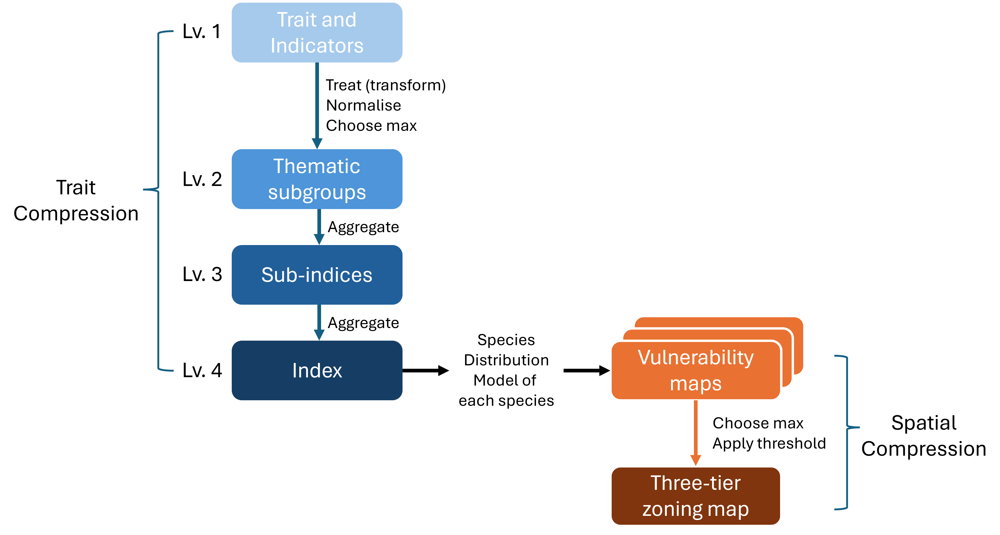

2 General Methods
2.1 Trait and Indicator Selection
Species traits (e.g., migratory status, habitat use) and ecological indicators (e.g., extent of occurrence) were used to develop the scoring framework for quantifying species vulnerability. These variables were sourced using three complementary approaches: (1) existing trait databases, (2) extraction from species observation records, and (3) manual coding from published literature and online resources. Combining these approaches allows for broader trait coverage while balancing data availability and quality across species groups.
2.1.1 Existing database
Trait information was sourced from established databases where available. The availability and quality of these databases vary across taxonomic groups: birds and freshwater fish are relatively well represented, while plants often have structured trait systems but remain data-deficient for many species. In contrast, mammals, reptiles, and amphibians currently lack comprehensive and well-populated trait databases.
Advantages: Existing databases provide analysis-ready data with standardised coding, often developed and reviewed by experts (e.g., BirdBase or national compilations such as Garnett et al. 2014 for Australian birds). This facilitates efficient integration into modelling workflows.
Limitations: Integrating multiple databases can be challenging due to differences in classification systems, variable definitions, and formats. Missing data are also common and may require imputation, which can introduce additional uncertainty.
2.1.2 Extraction from observation records
Trait-related indicators were derived from cleaned species occurrence records (prepared as part of the SDM workflow). This approach is particularly useful for estimating spatially explicit characteristics, such as climate breadth or habitat use.
Advantages: This method is entirely data-driven and avoids the need for imputation. It is especially valuable for data-deficient species, as it enables the derivation of ecological characteristics directly from observed distributions. It also allows uncertainty and variability to be quantified based on the underlying data.
Limitations: Observation data are subject to several biases. These include sampling effort bias (uneven survey effort distorts habitat use), spatial accuracy issues (imprecise coordinates assigning records to incorrect locations), and detection bias (e.g., waterbirds recorded primarily along shorelines). In addition, species with few records may yield unreliable estimates. Importantly, this method is only applicable to traits that have a spatial signal; life-history traits such as migratory status or generation length cannot be derived in this way.
2.1.3 Literature-based coding
Where data were not available from databases or could not be derived from occurrence records, traits were manually compiled from published literature, field guides, and credible online sources.
Advantages: This approach allows the inclusion of important ecological and life-history traits that are otherwise unavailable, ensuring more complete trait coverage across species.
Limitations: Manual coding can be time-intensive and may introduce subjectivity, particularly when translating qualitative descriptions into quantitative scores. Consistency in interpretation and documentation is therefore critical.
2.2 Theoretical Framework
Designing the framework for constructing a composite indicator is a critical step, as it provides the theoretical foundation for selecting, structuring, and combining variables. This ensures that the resulting indicator appropriately captures and represents the complex, multidimensional phenomenon of interest (OECD2008?).
The first step is to clearly define the composite indicator—species vulnerability—which serves as the basis for spatial representation in this assessment. At its core, species vulnerability describes the susceptibility of a species to decline or extinction, reflecting its potential to be adversely affected by environmental and anthropogenic stressors. In this context, vulnerability is used as a practical construct to represent a species’ state of exposure and response to harm.
The definition of vulnerability can vary depending on the context and objectives of the assessment. More commonly, vulnerability frameworks incorporate three dimensions—sensitivity, adaptive capacity, and exposure—to provide a comprehensive assessment of species risk (Hyman et al. 2025; Foden2019?; Butt2022?). However, the dimensions can be customised depending on the aims and context of the assessment. For example, vulnerability has been defined as a function of sensitivity (the degree to which a species is affected by a stressor) and adaptive capacity (its ability to adapt to or recover from that stressor) when assessing human impacts on a broad range of marine species (Butt2022?).
In this pilot study, species vulnerability is defined as a function of three core, interacting dimensions:
Sensitivity: the intrinsic degree to which a species, community, or ecosystem is affected by environmental disturbances or climatic variability. Due to limited availability of adaptability-related data, and its conceptual overlap with sensitivity, adaptive capacity is incorporated within the sensitivity dimension (Hyman et al. 2025).
Exposure: the rate, magnitude, or intensity of environmental change, stressors, or human-driven disturbances that an individual, species, or population experiences.
3 Cumulative Pressure: the combined, interactive effects of multiple environmental stressors—such as habitat fragmentation, climate change, pollution, and invasive species—acting simultaneously or sequentially on a specific species or population over time.
The inclusion of cumulative pressure provides important context by accounting for species that may not be intrinsically sensitive but are already under significant pressure due to ongoing or historical human activities and land-use conflicts. Where spatial data are available, current and anticipated development pressures beyond the study area can also be incorporated within this dimension to better reflect the overall risk profile of each species (Bennun2021?).
These dimensions provide a comprehensive and context-appropriate representation of species vulnerability, supporting the identification and spatial management of risks associated with future development and land-use planning.
2.2.1 Steps of compressing information
The vulnerability index represents the highest level of the composite indicator (Level 4) and is supported by three sub-indices (Level 3) corresponding to the core dimensions of vulnerability: sensitivity, exposure, and cumulative pressure. Each of these dimensions is further structured into thematic sub-groups (Level 2), ensuring transparency and ecological relevance in the classification and organisation of the underlying traits and indicators (Level 1)(Fig. 2.1).

Figure 2.1: Overview of the vulnerability assessment framework, showing the aggregation of species traits into a composite index and its application in generating vulnerability and zoning maps.
Each thematic sub-group comprises one or more traits or indicators as variables. These variables were treated with log transformation where necessary and normalised using min-max approach (OECD2008?; Becker2025?). Where multiple variables are included within a sub-group, the one with the highest score was chosen to represent the highest risk/limiting factor for that theme. These thematic sub-groups are then further aggregated using arithmetic mean to construct the three primary sub-indices (Level 3), which form the basis for the vulnerability index (Fig. 2.2).
This hierarchical structure (Fig. 2.2) allows the composite indicator to be traced back to its underlying components, enabling analysis of its internal structure at each level. From a framework design perspective, it is also highly flexible, as traits and indicators can be readily added to or removed from thematic sub-groups. This supports ongoing refinement, allowing the relevance and contribution of each component to be transparently evaluated and updated over time.
Figure 2.2: Structure of the composite indicator used to construct species vulnerability. The overall index (Level 4: Vulnerability) is composed of three sub-indices at Level 3: Sensitivity, Exposure, and Cumulative Pressure, each representing a distinct dimension of vulnerability. Each Level 3 sub-index is further composed of multiple thematic sub-groups (Level 2), which group related traits and indicators that measure specific aspects of that dimension.
2.2.2 Mapping vulnerability
The species-specific vulnerability scores are spatially projected by overlaying them onto each species’ distribution model. These layers are then stacked, and for each spatial unit (pixel), the maximum vulnerability value across all species is extracted to represent the highest level of biodiversity risk at that location.
The maximum vulnerability values are classified into three risk-based zones using defined thresholds: (1) low risk to biodiversity values and generally suitable for development, (2) moderate risk requiring careful planning and mitigation, and (3) high risk and not suitable for development.
Condensing complex information into a single value inevitably results in loss of details. However, if this limitation is acknowledged and the underlying data are presented alongside the aggregated values, the composite indicator can effectively summarise the data and reveal overall trends and patterns (OECD2008?).
The framework integrates stable biological traits, current population trends, and dynamic future development pressures to provide a comprehensive assessment of risk. In addition to supporting timely and evidence-based decision-making, the composite indicator is designed to facilitate meaningful stakeholder engagement. This systematic and reproducible approach ensures that species with high intrinsic sensitivity or those subject to the greatest pressures are consistently identified in an analytically sound approach.
Term definitions
Term definitions provide clear explanations of specific words and concepts used in this report.
Index – The highest-level composite measure representing a multidimensional concept. In this study, the vulnerability index reflects overall species vulnerability, integrating sensitivity, exposure, and cumulative pressure across multiple species.
Sub-index – A secondary-level component of a composite indicator that aggregates related thematic variables. In this study, sub-indices correspond to the core dimensions of vulnerability: Sensitivity, Exposure, and Cumulative Pressure.
Sub-groups – Thematic clusters of related traits or indicators (Level 2) that are combined to form a sub-index. Sub-groups ensure ecological relevance and transparency in the organisation of variables.
Indicator – A measurable variable or data point that quantifies a specific ecological attribute or pressure. Indicators are the building blocks of sub-groups and may be derived from traits, population data, or spatial datasets.
Trait – A quantifiable characteristic of a species representing a specific biological or ecological attribute. Traits are used to assess intrinsic sensitivity or vulnerability to environmental and anthropogenic pressures. By definition, traits are directly observed and objective; they are not synthesized, processed, or derived information. For example, the extent of occurrence of a species is not considered a trait.
Variable – A specific data field within a dataset used to represent or quantify a trait or indicator.
Database – A curated collection of species traits, population metrics, distribution models, or environmental data sourced and organised by experts of a specific species group.
Vulnerability – A species’ overall susceptibility to a specific development type, integrating its sensitivity, exposure, and cumulative pressures. Vulnerability serves as the core construct for spatial representation of species risk.
Risk zone – A spatially defined area classified based on vulnerability scores, indicating levels of biodiversity risk and suitability for development.
Reproducibility
All analyses were conducted in a scripted workflow using the statistical computing environment ‘R’ (R-base?). R is free and open-source software, commonly used by researchers from a range of fields for analyses and graphics. It can be extended by a range of open-source packages designed for specific analyses or other tasks, built by a large and active development community. The packages used in this project are listed in Appendix Table A.1. R was used within the R-studio IDE (integrated development environment), which provides a range of user-friendly features to facilitate interaction with R such as a graphical user interface, project organisation, and integration with git and other version control systems.
The coding workflow is implemented using the targets package (Landau 2021; Landau 2026). Targets manages complex coding pipelines by skipping tasks that are already up-to-date, and only running what is required. This allows for incremental changes to code without needing to rerun the full workflow from scratch, which may take several days.
The production of this report is part of this scripted and targets-wrapped workflow, using the markdown language implemented in R by the packages rmarkdown (Xie et al. 2018; Xie et al. 2020; Allaire et al. 2025), knitr (Xie 2014; Xie 2015; Xie 2025b), and bookdown (Xie 2016; Xie 2025a). This allows for any updates to the analysis to be automatically reflected in the report output.
All code is stored in a version control system (GitHub) at https://github.com/dew-landscapes.